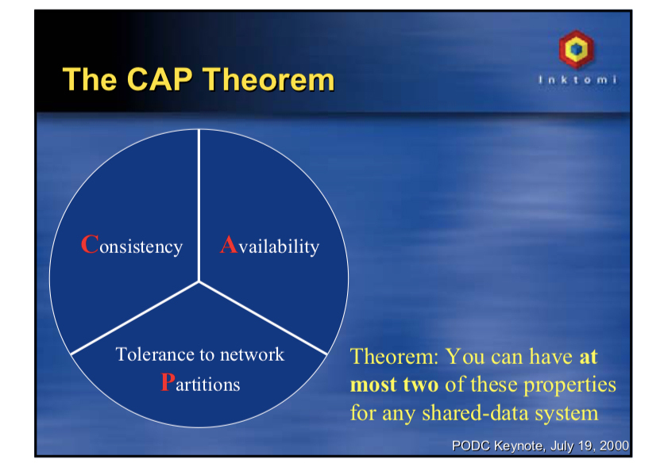
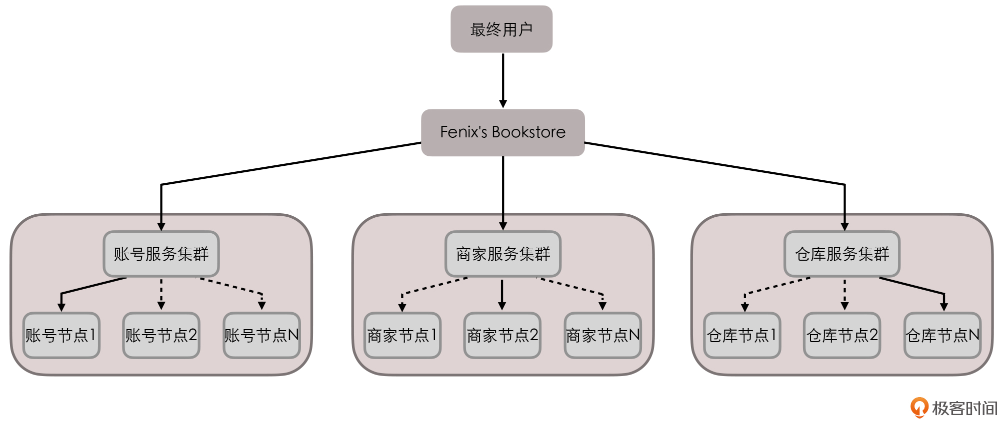
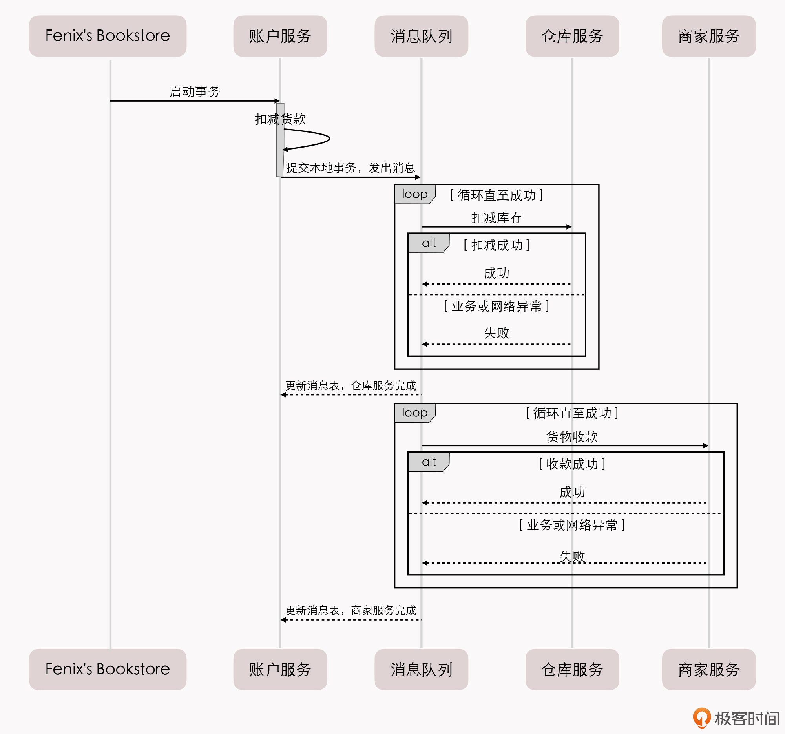

- 00 _导读 _ 什么是“The Fenix Project”？.md.html
- 00 开篇词 _ 如何构建一个可靠的分布式系统？.md.html
- 01 _ 原始分布式时代：Unix设计哲学下的服务探索.md.html
- 02 _ 单体系统时代：应用最广泛的架构风格.md.html
- 03 _ SOA时代：成功理论与失败实践.md.html
- 04 _ 微服务时代：SOA的革命者.md.html
- 05 _ 后微服务时代：跨越软件与硬件之间的界限.md.html
- 06 _ 无服务时代：“不分布式”云端系统的起点.md.html
- 07 _ 远程服务调用（上）：从本地方法到远程方法的桥梁.md.html
- 08 _ 远程服务调用（下）：如何选择适合自己的RPC框架？.md.html
- 09 _ RESTful服务（上）：从面向过程编程到面向资源编程.md.html
- 10 _ RESTful服务（下）：如何评价服务是否RESTful？.md.html
- 11 _ 本地事务如何实现原子性和持久性？.md.html
- 12 _ 本地事务如何实现隔离性？.md.html
- 13 _ 全局事务和共享事务是如何实现的？.md.html
- 14 _ 分布式事务之可靠消息队列.md.html
- 15 _ 分布式事务之TCC与SAGA.md.html
- 16 _ 域名解析系统，优化HTTP性能的第一步.md.html
- 17 _ 客户端缓存是如何帮助服务器分担流量的？.md.html
- 18 _ 传输链路，优化HTTP传输速度的小技巧.md.html
- 19 _ 如何利用内容分发网络来提高网络性能？.md.html
- 20 _ 常见的四层负载均衡的工作模式是怎样的？.md.html
- 21 _ 服务端缓存的三种属性.md.html
- 22 _ 分布式缓存如何与本地缓存配合，提高系统性能？.md.html
- 23 _ 认证：系统如何正确分辨操作用户的真实身份？.md.html
- 24 _ 授权（上）：系统如何确保授权的过程可靠？.md.html
- 25 _ 授权（下）：系统如何确保授权的结果可控？.md.html
- 26 _ 凭证：系统如何保证与用户之间的承诺是准确完整且不可抵赖的？.md.html
- 27 _ 保密：系统如何保证敏感数据无法被内外部人员窃取滥用？.md.html
- 28 _ 传输（上）：传输安全的基础，摘要、加密与签名.md.html
- 29 _ 传输（下）：数字证书与传输安全层.md.html
- 30 _ 验证：系统如何确保提交给服务的数据是安全的？.md.html
- 31 _ 分布式共识（上）：想用好分布式框架，先学会Paxos算法吧.md.html
- 32 _ 分布式共识（下）：Multi Paxos、Raft与Gossip，分布式领域的基石.md.html
- 33 _ 服务发现如何做到持续维护服务地址在动态运维中的时效性？.md.html
- 34 _ 路由凭什么作为微服务网关的基础职能？.md.html
- 35 _ 如何在客户端实现服务的负载均衡？.md.html
- 36 _ 面对程序故障，我们该做些什么？.md.html
- 37 _ 要实现某种容错策略，我们该怎么做？.md.html
- 38 _ 限流的目标与模式.md.html
- 39 _ 如何构建零信任网络安全？.md.html
- 40 _ 如何实现零信任网络下安全的服务访问？.md.html
- 41 _ 分布式架构中的可观测到底说的是什么？.md.html
- 42 _ 分析日志真的没那么简单.md.html
- 43 _ 一个完整的分布式追踪系统是什么样子的？.md.html
- 44 _ 聚合度量能给我们解决什么问题？.md.html
- 45 _ 模块导学：从微服务到云原生.md.html
- 46 _ 容器的崛起（上）：文件、访问、资源的隔离.md.html
- 47 _ 容器的崛起（下）：系统、应用、集群的封装.md.html
- 48 _ 以容器构建系统（上）：隔离与协作.md.html
- 49 _ 以容器构建系统（下）：韧性与弹性.md.html
- 50 _ 应用为中心的封装（上）：Kustomize与Helm.md.html
- 51 _ 应用为中心的封装（下）：Operator与OAM.md.html
- 52 _ Linux网络虚拟化（上）：信息是如何通过网络传输被另一个程序接收到的？.md.html
- 53 _ Linux网络虚拟化（下）：Docker所提供的容器通讯方案有哪些？.md.html
- 54 _ 容器网络与生态：与CNM竞争过后的CNI下的网络插件生态.md.html
- 55 _ 谈谈Kubernetes的存储设计理念.md.html
- 56 _ Kubernetes存储扩展架构：一个真实的存储系统如何接入或移除新存储设备？.md.html
- 57 _ Kubernetes存储生态系统：几种有代表性的CSI存储插件的实现.md.html
- 58 _ Kubernetes的资源模型与调度器设计.md.html
- 59 _ 透明通讯的涅槃（上）：通讯的成本.md.html
- 60 _ 透明通讯的涅槃（下）：控制平面与数据平面.md.html
- 61 _ 服务网格与生态：聊聊服务网格的两项标准规范.md.html
- 62 _ Fenix's Bookstore的前端工程.md.html
- 63 _ 基于Spring Boot的单体架构.md.html
- 64 _ 基于Spring Cloud的微服务架构.md.html
- 65 _ 基于Kubernetes的微服务架构.md.html
- 66 _ 基于Istio的服务网格架构.md.html
- 67 _ 基于云计算的无服务架构.md.html
- 春节特别放送（上）_ 有的放矢，事半功倍.md.html
- 春节特别放送（下）_ 积累沉淀，知行合一.md.html
- 用户故事 _ 詹应达：持续成长，不惧未来.md.html
- 结束语 _ 程序员之路.md.html
- 结课测试 _ 一套习题，测出你的掌握程度.md.html
- 捐赠
14 _ 分布式事务之可靠消息队列
你好，我是周志明。
前面几节课，我们谈论了事务处理中的本地事务（单个服务、单个数据源）、全局事务（单个服务、多个数据源）和共享事务（多个服务、单个数据源），这一讲我们将聚焦于事务处理中最复杂的分布式事务（多个服务、多个数据源）。
在开始展开介绍之前，我想先给你强调一下，这里所说的分布式事务（Distributed Transactions），跟DTP模型中所指的“分布式事务”的含义是不一样的：DTP模型所指的“分布式”是相对于数据源而言的，并不涉及服务，这部分内容我们在上节课已经讨论过了；而这里的“分布式”是相对于服务而言的，它特指的是多个服务同时访问多个数据源的事务处理机制，严谨地说，它更应该被称为“在分布式服务环境下的事务处理机制”。
其实在上一讲我们就提到过，为了解决分布式事务的一致性问题，1991年X/Open组织提出了一套XA的事务处理架构。在2000年以前，人们还寄希望于这套事务处理架构能良好地应用在分布式环境中。不过很遗憾，这个美好的愿望今天已经被CAP理论彻底地击碎了。
那么，为什么会出现这种局面呢？就让我们从CAP与ACID的矛盾开始说起吧。
CAP与ACID之间的矛盾
CAP理论又叫Brewer理论，这是加州大学伯克利分校的埃里克 · 布鲁尔（Eric Brewer）教授，在2000年7月“ACM分布式计算原理研讨会（PODC）”上提出的一个猜想。

CAP理论原稿（那时候还只是猜想）
然后到了2002年，麻省理工学院的赛斯 · 吉尔伯特（Seth Gilbert）和南希 · 林奇（Nancy Lynch）就以严谨的数学推理证明了这个CAP猜想。在这之后，CAP理论就正式成为了分布式计算领域公认的著名定理。
这个定理里，描述了一个分布式的系统中，当涉及到共享数据问题时，以下三个特性最多只能满足其中两个：
- 一致性（Consistency）：代表在任何时刻、任何分布式节点中，我们所看到的数据都是没有矛盾的。这与第11讲所提到的ACID中的C是相同的单词，但它们又有不同的定义（分别指Replication的一致性和数据库状态的一致性）。在分布式事务中，ACID的C要以满足CAP中的C为前提。
- 可用性（Availability）：代表系统不间断地提供服务的能力。
- 分区容忍性（Partition Tolerance）：代表分布式环境中，当部分节点因网络原因而彼此失联（即与其他节点形成“网络分区”）时，系统仍能正确地提供服务的能力。
当然，单纯只看这个概念的话，CAP是比较抽象的，我还是以第11讲开头所列的事例场景来说明一下，这三种特性对分布式系统来说都意味着什么。
事例场景：Fenix’s Bookstore是一个在线书店。一份商品成功售出，需要确保以下三件事情被正确地处理：
- 用户的账号扣减相应的商品款项；
- 商品仓库中扣减库存，将商品标识为待配送状态；
- 商家的账号增加相应的商品款项。
假设，Fenix’s Bookstore的服务拓扑如下图所示，一个来自最终用户的交易请求，将交由账号、商家和仓库服务集群中的某一个节点来完成响应：

Fenix’s Bookstore的服务拓扑
你可以看到，在这套系统中，每一个单独的服务节点都有着自己的数据库。
假设某次交易请求分别由“账号节点1”“商家节点2”“仓库节点N”来进行响应，当用户购买一件价值100元的商品后，账号节点1首先应该给用户账号扣减100元货款。
账号节点1在自己的数据库扣减100元是很容易的，但它还要把这次交易变动告知账号节点2到N，以及确保能正确变更商家和仓库集群其他账号节点中的关联数据。那么此时，我们可能会面临以下几种情况：
- 如果该变动信息没有及时同步给其他账号节点，那么当用户购买其他商品时，会被分配给另一个节点处理，因为没有及时同步，此时系统会看到用户账户上有不正确的余额，从而错误地发生了原本无法进行的交易。此为一致性问题。
- 如果因为要把该变动信息同步给其他账号节点，就必须暂停对该用户的交易服务，直到数据同步一致后再重新恢复，那么当用户在下一次购买商品时，可能会因为系统暂时无法提供服务而被拒绝交易。此为可用性问题。
- 如果由于账号服务集群中某一部分节点，因出现网络问题，无法正常与另一部分节点交换账号变动信息，那么此时的服务集群中，无论哪一部分节点对外提供的服务，都可能是不正确的，我们需要考虑能否接受由于部分节点之间的连接中断，而影响整个集群的正确性的情况。此为分区容忍性问题。
以上还只是涉及到了账号服务集群自身的CAP问题，而对于整个Bookstore站点来说，它更是面临着来自于账号、商家和仓库服务集群带来的CAP问题。
比如，用户账号扣款后，由于没有及时通知仓库服务，导致另一次交易中看到仓库中有不正确的库存数据而发生了超售。再比如，因为仓库中某个商品的交易正在进行当中，为了同步用户、商家和仓库此时的交易变动，而暂时锁定了该商品的交易服务，导致了可用性问题，等等。
不过既然CAP理论已经有了数学证明，也成为了业界公认的计算定理，我们就不去讨论为何CAP特性会存在不可兼得的问题了，直接来分析下在实际的应用场景中，我们要如何权衡取舍CAP，然后看看这些不同取舍都会带来哪些问题。
- 如果放弃分区容错性（CA without P）
这意味着，我们将假设节点之间的通讯永远是可靠的。可是永远可靠的通讯在分布式系统中必定是不成立的，这不是你想不想的问题，而是网络分区现象始终会存在。
在现实场景中，主流的RDBMS（关系数据库管理系统）集群通常就是采用放弃分区容错性的工作模式。以Oracle的RAC集群为例，它的每一个节点都有自己的SGA（系统全局区）、重做日志、回滚日志等，但各个节点是共享磁盘中的同一份数据文件和控制文件的，也就是说，RAC集群是通过共享磁盘的方式来避免网络分区的出现。
- 如果放弃可用性（CP without A）
这意味着，我们将假设一旦发生分区，节点之间的信息同步时间可以无限制地延长，那么这个问题就相当于退化到了上一讲所讨论的全局事务的场景之中，即一个系统可以使用多个数据源。我们可以通过2PC/3PC等手段，同时获得分区容错性和一致性。
在现实中，除了DTP模型的分布式数据库事务外，著名的HBase也是属于CP系统。以它的集群为例，假如某个RegionServer宕机了，这个RegionServer持有的所有键值范围都将离线，直到数据恢复过程完成为止，这个时间通常会是很长的。
- 如果放弃一致性（AP without C）
这意味着，我们将假设一旦发生分区，节点之间所提供的数据可能不一致。
AP系统目前是分布式系统设计的主流选择，大多数的NoSQL库和支持分布式的缓存都是AP系统。因为P是分布式网络的天然属性，你不想要也无法丢弃；而A通常是建设分布式的目的，如果可用性随着节点数量增加反而降低的话，很多分布式系统可能就没有存在的价值了（除非银行这些涉及到金钱交易的服务，宁可中断也不能出错）。
以Redis集群为例，如果某个Redis节点出现网络分区，那也不妨碍每个节点仍然会以自己本地的数据对外提供服务。但这时有可能出现这种情况，即请求分配到不同节点时，返回给客户端的是不同的数据。
那么看到这里，你是否感受到了一丝无奈？这个小章节所讨论的话题“事务”，原本的目的就是要获得“一致性”。而在分布式环境中，“一致性”却不得不成为了通常被牺牲、被放弃的那一项属性。
但无论如何，我们建设信息系统，终究还是要保证操作结果（在最终被交付的时候）是正确的。为此，人们又重新给一致性下了定义，把前面我们在CAP、ACID中讨论的一致性称为“强一致性**”（Strong Consistency），有时也称为“线性一致性”（Linearizability），而把牺牲了C的AP系统，又要尽可能获得正确的结果的行为，称为追求“弱一致性**”。
不过，如果单纯只说“弱一致性”，那其实就是“不保证一致性”的意思……人类语言这东西真是博大精深。
所以，在弱一致性中，人们又总结出了一种特例，叫做“[最终一致性](https://en.wikipedia.org/wiki/Eventual_consistency)”（Eventual Consistency）。它是指，如果数据在一段时间内没有被另外的操作所更改，那它最终将会达到与强一致性过程相同的结果，有时候面向最终一致性的算法，也被称为“乐观复制算法”。
那么，在“分布式事务”中，我们的设计目标同样也不得不从获得强一致性，降低为获得“最终一致性”，在这个意义上，其实“事务”一词的含义也已经被拓宽了。
除了本地事务、全局事务和分布式事务以外，还有一种对于不同事务的叫法，那就是针对追求ACID的事务，我们称之为“刚性事务”。而在接下来和下一讲中，我将要介绍的几种分布式事务的常见做法，会统称为“柔性事务”。
这一讲我们先来讨论下，可靠消息队列这种分布式事务的实现方式。
可靠事件队列
前面提到的最终一致性的概念，是由eBay的系统架构师丹 · 普利切特（Dan Pritchett）在2008年发表于ACM的论文“Base: An Acid Alternative”中提出的。
这篇文章中，总结了一种独立于ACID获得的强一致性之外的途径，即通过BASE来达成一致性目的，最终一致性就是其中的“E”。
BASE这个提法，比ACID凑缩写的痕迹更重，不过因为有ACID vs BASE（酸 vs 碱）这个朗朗上口的梗，这篇文章传播得足够快。在这里我就不多谈BASE中的概念了，但这篇论文本身作为最终一致性的概念起源，并系统性地总结了一种在分布式事务的技术手段，还是非常有价值的。
下面，我们继续以Fenix’s Bookstore的事例场景，来解释下丹 · 普利切特提出的“可靠事件队列”的具体做法，下图为操作时序：

可靠事件队列时序图
我们按照顺序，一步步来解读一下。
第一步，最终用户向Fenix’s Bookstore发送交易请求：购买一本价值100元的《深入理解Java虚拟机》。
第二步，Fenix’s Bookstore应该对用户账户扣款、商家账户收款、库存商品出库这三个操作有一个出错概率的先验评估，根据出错概率的大小来安排它们的操作顺序（这个一般体现在程序代码中，有一些大型系统也可能动态排序）。比如，最有可能出错的地方，是用户购买了，但是系统不同意扣款，或者是账户余额不足；其次是商品库存不足；最后是商家收款，一般收款不会遇到什么意外。那么这个顺序就应该是最容易出错的最先进行，即：账户扣款 → 仓库出库 → 商家收款。
第三步，账户服务进行扣款业务，如果扣款成功，就在自己的数据库建立一张消息表，里面存入一条消息：“事务ID：UUID；扣款：100元（状态：已完成）；仓库出库《深入理解Java虚拟机》：1本（状态：进行中）；某商家收款：100元（状态：进行中）”。注意，这个步骤中“扣款业务”和“写入消息”是依靠同一个本地事务写入自身数据库的。
第四步，系统建立一个消息服务，定时轮询消息表，将状态是“进行中”的消息同时发送到库存和商家服务节点中去。
这时候可能会产生以下几种情况：
- 商家和仓库服务成功完成了收款和出库工作，向用户账户服务器返回执行结果，用户账户服务把消息状态从“进行中”更新为“已完成”。整个事务宣告顺利结束，达到最终一致性的状态。
- 商家或仓库服务有某些或全部因网络原因，未能收到来自用户账户服务的消息。此时，由于用户账户服务器中存储的消息状态，一直处于“进行中”，所以消息服务器将在每次轮询的时候，持续地向对应的服务重复发送消息。这个步骤的可重复性，就决定了所有被消息服务器发送的消息都必须具备幂等性。通常我们的设计是让消息带上一个唯一的事务ID，以保证一个事务中的出库、收款动作只会被处理一次。
- 商家或仓库服务有某个或全部无法完成工作。比如仓库发现《深入理解Java虚拟机》没有库存了，此时，仍然是持续自动重发消息，直至操作成功（比如补充了库存），或者被人工介入为止。
- 商家和仓库服务成功完成了收款和出库工作，但回复的应答消息因网络原因丢失。此时，用户账户服务仍会重新发出下一条消息，但因消息幂等，所以不会导致重复出库和收款，只会导致商家、仓库服务器重新发送一条应答消息。此过程会一直重复，直至双方网络恢复。
- 也有一些支持分布式事务的消息框架，如RocketMQ，原生就支持分布式事务操作，这时候前面提到的情况2、4也可以交给消息框架来保障。
前面这种靠着持续重试来保证可靠性的操作，在计算机中就非常常见，它有个专门的名字，叫做“最大努力交付”（Best-Effort Delivery），比如TCP协议中的可靠性保障，就属于最大努力交付。
而“可靠事件队列”有一种更普通的形式，被称为“最大努力一次提交”（Best-Effort 1PC），意思就是系统会把最有可能出错的业务，以本地事务的方式完成后，通过不断重试的方式（不限于消息系统）来促使同个事务的其他关联业务完成。
小结
这节课，我第一次引入了CAP定理，希望你能通过事务处理的上下文场景去理解它。这套理论不仅是在事务处理中，而且在一致性、共识，乃至整个分布式所有涉及到数据的知识点中，都有重要的应用，后面讲到分布式共识算法、微服务中多种基础设施等内容的时候，我们还会多次涉及到它。
除了可靠事件队列之外，下一讲我还会给你介绍TCC和SAGA这两种主流的实现方式，它们都有各自的优缺点和应用场景。分布式系统中不存在放之四海皆准的万能事务解决方案，针对具体场景，选择合适的解决方案，达到一致性与可用性之间的最佳平衡，是我们作为一名设计者必须具备的技能。
一课一思
请你思考一下，为什么XA事务很少在分布式环境下直接应用，会有什么代价？而这节课介绍的“可靠事件队列”的事务实现方式又会有什么代价？欢迎给我留言，分享你的思考和见解。
如果你觉得有收获，也欢迎把今天的内容分享给更多的朋友。感谢你的阅读，我们下一讲再见。
© 2019 - 2023 Liangliang Lee. Powered by gin and hexo-theme-book.